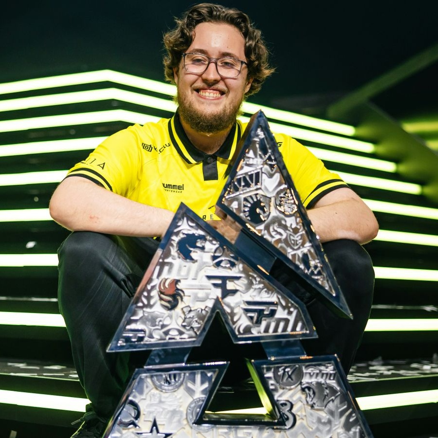
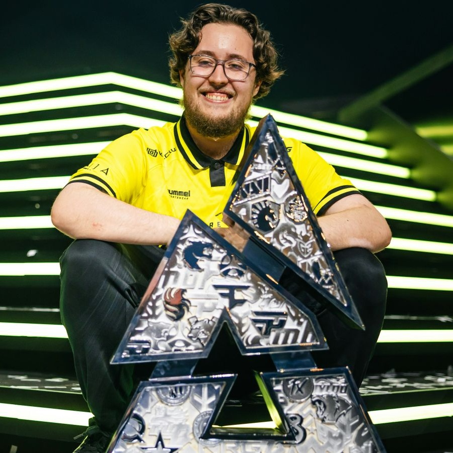
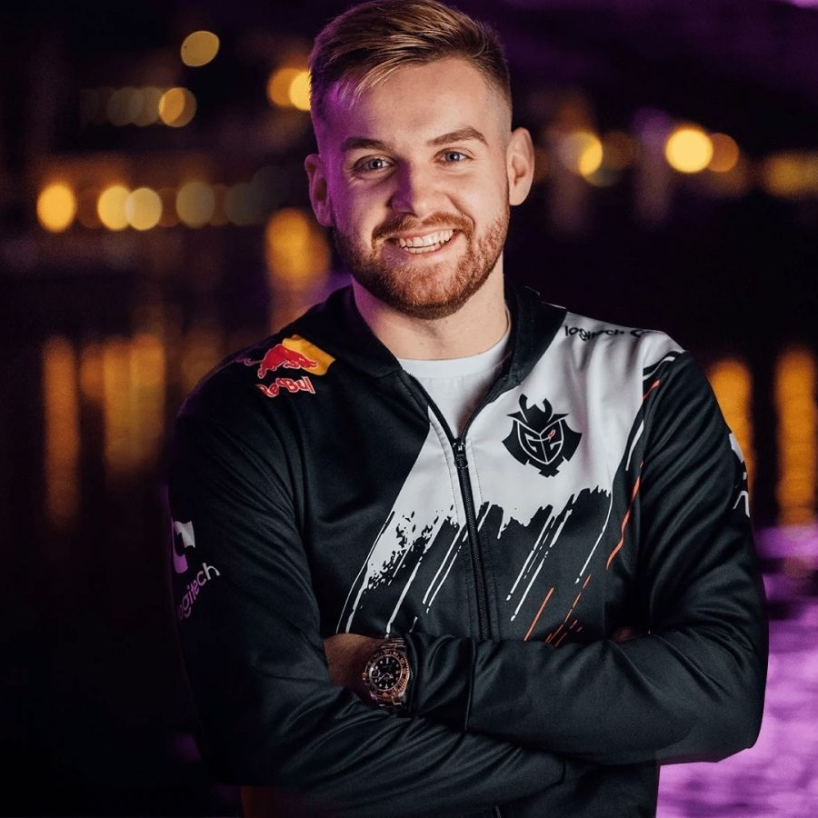
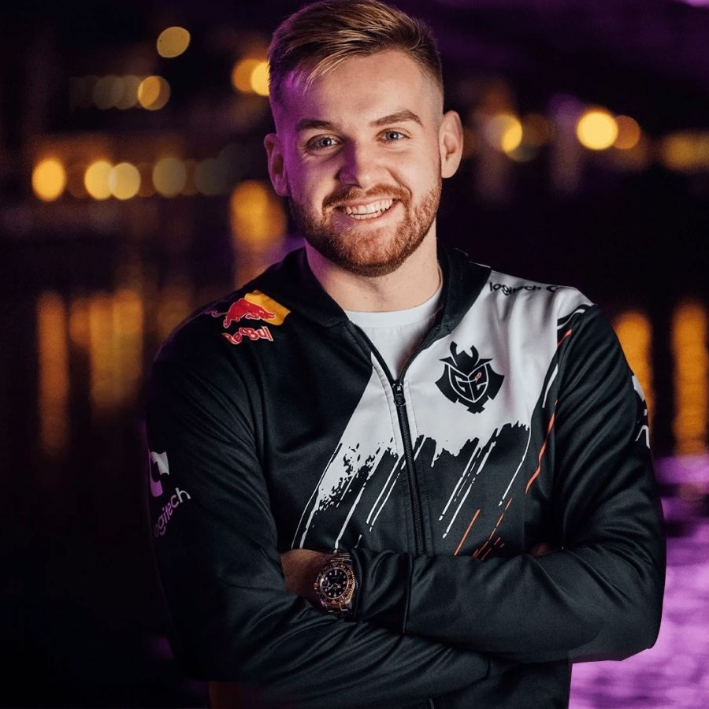
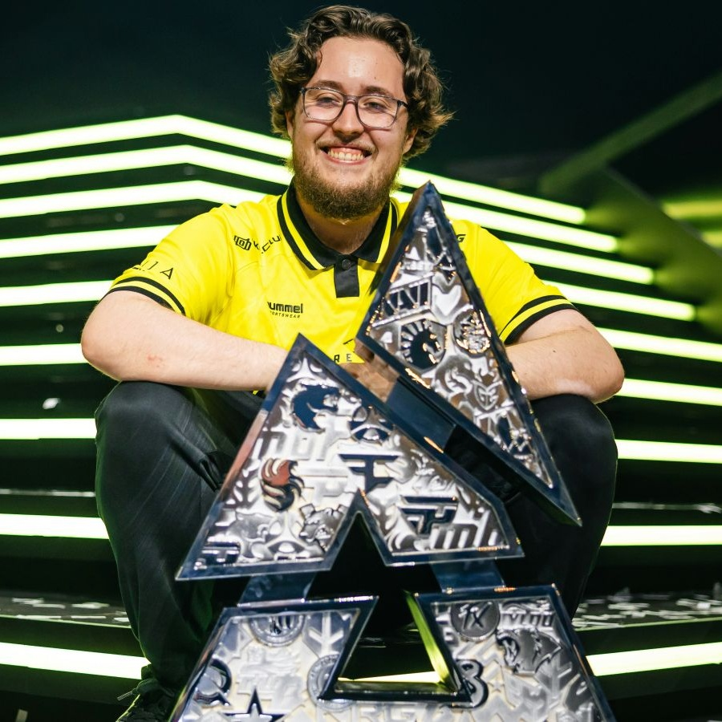
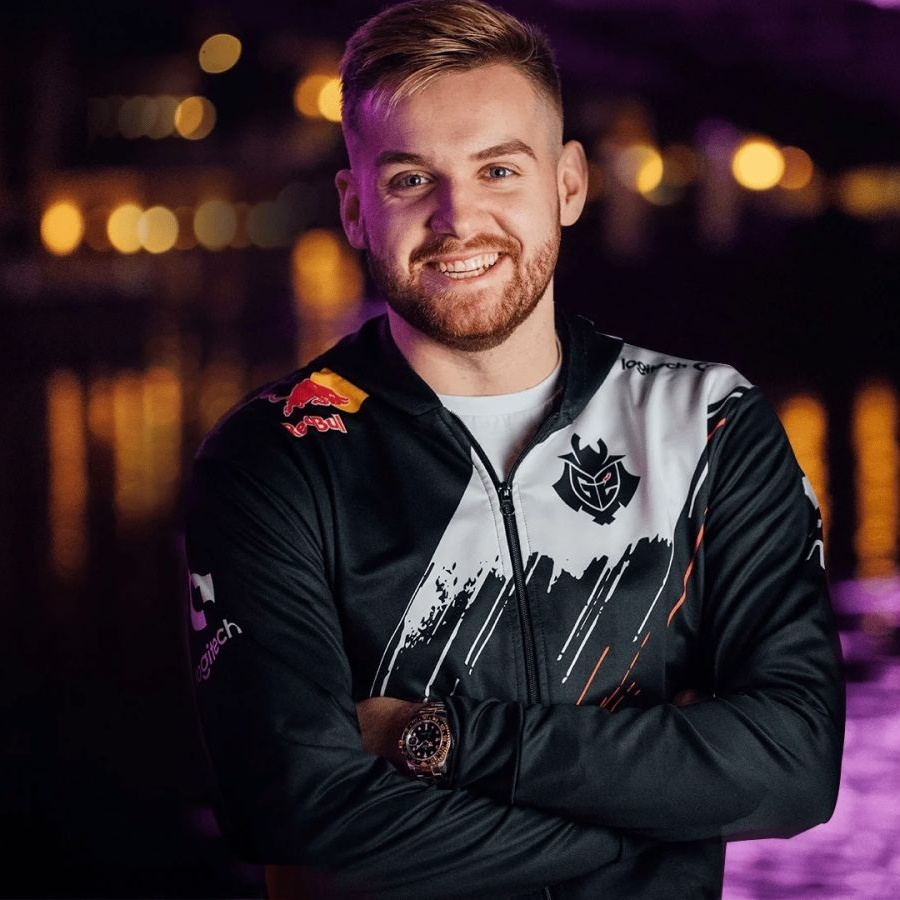
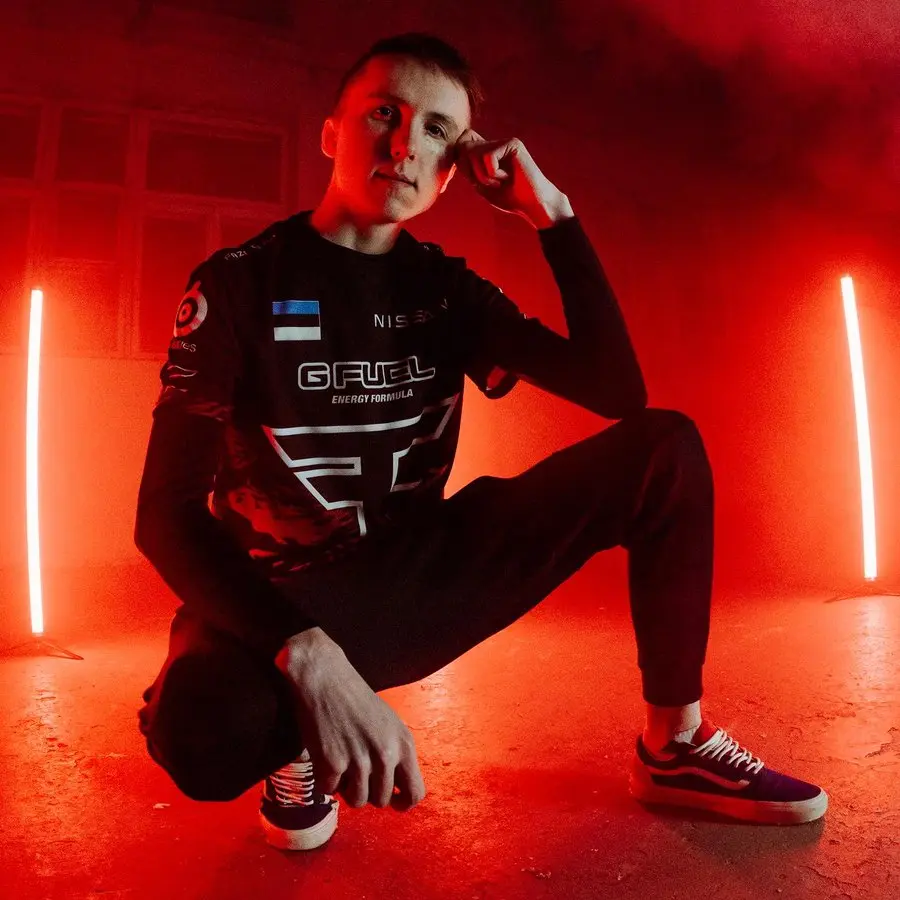
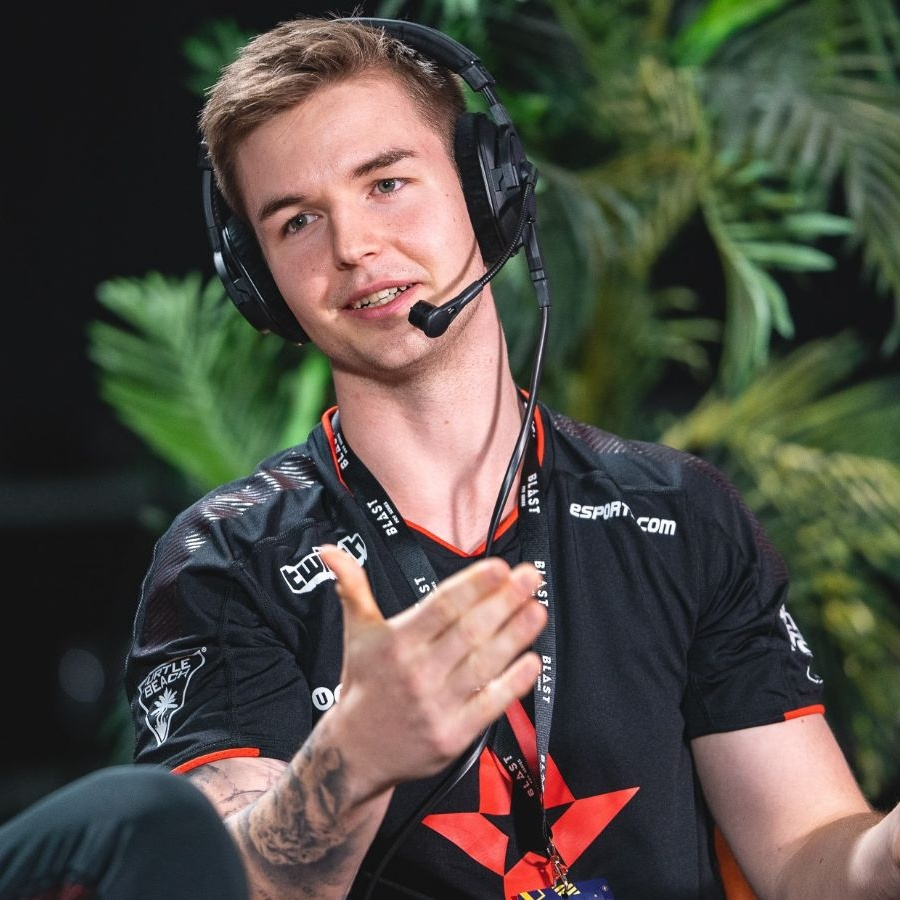

 



 Робин «ropz» Кул
Профессиональный игрок в Counter-Strike, считающийся одним из
наиболее разносторонних и интеллектуальных рифлеров в истории игры.
Его стиль игры стал эталоном хладнокровия и тактической грамотности.
Карьера игрока началась в 2015 году в эстонских коллективах.
Первым крупным прорывом стало выступление за международный микс
Team Envy в 2017 году, где он показал свой потенциал.
В 2017 году после успешного прохождения отбора через платформу FPL
был подписан организацией mousesports.
Именно здесь карьера ropz достигла первого пика. За 4 года в составе
mousesports он выиграл несколько престижных турниров и утвердился в роли звезды
мировой сцены.
В январе 2022 года ropz присоединился к международной суперкоманде FaZe Clan.
Именно здесь его карьера достигла абсолютного пика.
В первый же год команда оформила так называемый «золотой слиток» (Intel Grand Slam),
выиграв несколько элитных турниров подряд,
включая легендарный PGL Major Antwerp 2022.
В 2024 году ropz перешел в европейскую команду Team Vitality,
где занял ключевую роль и продолжил борьбу за высшие награды в CS2.
Главные достижения:
 Николай «device» Ридтц
Профессиональный игрок в Counter-Strike, считающийся одним из величайших
снайперов в истории игры.
Его стиль игры стал эталоном стабильности и
эффективности.
Карьера игрока началась в 2013 году в датских коллективах.
Первым крупным успехом стало выступление за команду Team Dignitas в 2014 году,
где собрался костяк будущей «датской династии».
В 2015 году состав был подписан организацией Team SoloMid (TSM) и мгновенно стал
одним из сильнейших в мире, стабильно попадая в топ-4 крупных
турниров.
В январе 2016 года игроки создали собственную организацию — Astralis.
Именно здесь карьера Device достигла пика. За 5 лет в составе Astralis
он выиграл все главные трофеи в мире CS:GO и установил множество рекордов.
Команда доминировала на сцене благодаря новаторскому подходу к тактике
и командной работе.
В 2021 году Device неожиданно покинул Astralis и перешёл в шведскую
команду Ninjas in Pyjamas (NiP), став их ключевым игроком.
Однако этот период оказался менее успешным.
В 2023 году, после перерыва в карьере, связанного с лечением,
Device триумфально вернулся в Astralis, чтобы помочь родной команде
вернуться к вершинам.
В 2024 году стал игроком международного состава Falcons.
Главные достижения: